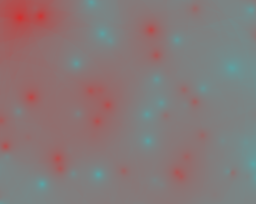

Roger Veciana i Rovira
Datos vectoriales: turf.js, jsts
Datos raster
geotiff.js + DIY
Cálculos raster fácilmente paralelizables
const gpu = new GPU();
const matMult = gpu.createKernel(function(a, b) {
var sum = 0;
for (var i = 0; i < 512; i++) {
sum += a[this.thread.y][i] * b[i][this.thread.x];
}
return sum;
}).setOutput([512, 512]);
const c = matMult(a, b);
\[\begin{aligned} temperatura & = \beta_{0} + \beta_{1} * altitud + \beta_{2} * distancia \end{aligned} \]
Fórmula matricial: \[\hat{\beta}=(X^{T}X)^{-1}X^{T}y\\ \hat{y}=X\hat{\beta}\]
numeric.js
\[e=y-\hat{y}\]
Interpolación por inverso de la distancia
